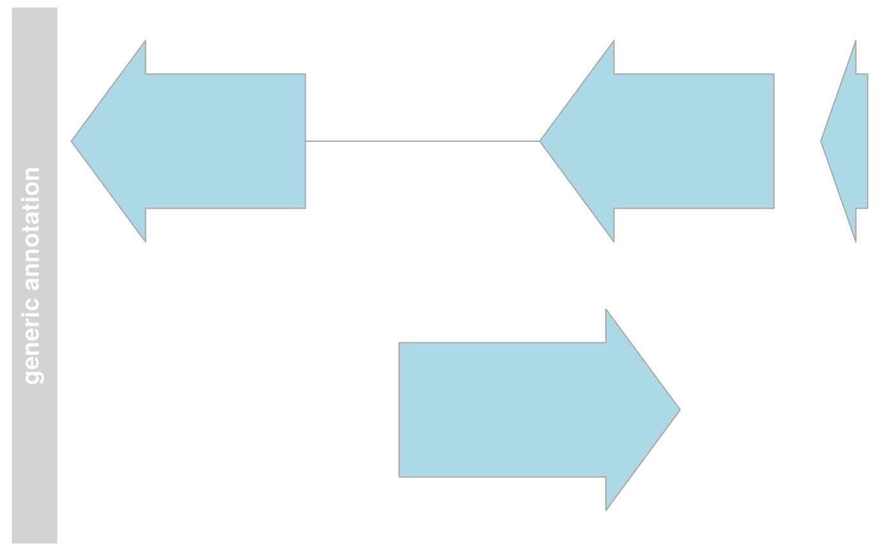

The virtual parent class for all track items in the Gviz package. This
class definition contains all the common entities that are needed for a
track to be plotted. During object instantiation for any of the sub-classes
inheriting from GdObject, this class' global initializer has to be
called in order to assure that all necessary settings are present.
# S4 method for GdObject
initialize(.Object, name, ...)
# S4 method for GdObject,character
setPar(x, name, value, interactive = TRUE)
# S4 method for GdObject,list
setPar(x, value, interactive = TRUE)
# S4 method for GdObject,list
displayPars(x, recursive = FALSE) <- value
# S4 method for GdObject,character
getPar(x, name, asIs = FALSE)
# S4 method for GdObject,missing
getPar(x, hideInternal = TRUE)
# S4 method for GdObject,character
displayPars(x, name)
# S4 method for GdObject,missing
displayPars(x, hideInternal = TRUE)
# S4 method for GdObject
coords(ImageMap)
# S4 method for GdObject
tags(ImageMap)
# S4 method for GdObject
subset(x, ...)
# S4 method for GdObject
names(x)
# S4 method for GdObject,character
names(x) <- value
group(GdObject, ...)
group(GdObject) <- value
# S4 method for GdObject
group(GdObject)
imageMap(GdObject, ...)
# S4 method for GdObject
imageMap(GdObject)
imageMap(GdObject) <- value
# S4 method for GdObject,ImageMapOrNULL
imageMap(GdObject) <- value
drawAxis(GdObject, ...)
# S4 method for GdObject
drawAxis(GdObject, ...)
drawGrid(GdObject, ...)
drawGD(GdObject, ...)
gene(GdObject, ...)
gene(GdObject) <- value
symbol(GdObject, ...)
symbol(GdObject) <- value
transcript(GdObject, ...)
transcript(GdObject) <- value
exon(GdObject, ...)
exon(GdObject) <- value
feature(GdObject, ...)
feature(GdObject) <- value
identifier(GdObject, ...)
identifier(GdObject) <- value
chromosome(GdObject, ...)
# S4 method for GdObject
chromosome(GdObject)
chromosome(GdObject) <- value
# S4 method for GdObject
chromosome(GdObject) <- value
position(GdObject, ...)
# S4 method for GdObject
genome(x)
# S4 method for GdObject
genome(x) <- value
consolidateTrack(GdObject, ...)
# S4 method for GdObject
consolidateTrack(GdObject, alpha, ...)
stacking(GdObject, ...)
stacking(GdObject) <- value
stacks(GdObject, ...)
setStacks(GdObject, ...)
# S4 method for GdObject
setStacks(GdObject, ...)
setCoverage(GdObject, ...)Name of the retrieved parameter.
Additional arguments.
A valid track object class name, or the object itself, in which case the class is derived directly from it.
Value to be set.
logical
logical
logical
logical
Object of ImageMap-class, containing optional information
for an HTML image map.
Object of GdObject-class.
A virtual class: No objects may be created from it.
The following display parameters are set for objects of class GdObject
upon instantiation, unless one or more of them have already been set by
one of the optional sub-class initializers, which always get precedence
over these global defaults. See settings for details on setting
graphical parameters for tracks.
alpha=1 Numeric scalar. The transparency for all track items.
alpha.title=NULL Numeric scalar. The transparency for the title panel.
background.legend="transparent" Integer or character scalar.
The background colour for the legend.
background.panel="transparent" Integer or character scalar.
The background colour of the content panel.
background.title="lightgray" Integer or character scalar.
The background colour for the title panel.
cex=1 Numeric scalar. The overall font expansion factor for all text
and glyphs, unless a more specific definition exists.
cex.axis=NULL Numeric scalar. The expansion factor for the axis
annotation. Defaults to NULL, in which case it is automatically determined
based on the available space.
cex.title=NULL Numeric scalar. The expansion factor for the title
panel. This effects the font size of both the title and the axis, if any.
Defaults to NULL, which means that the text size is automatically adjusted
to the available space.
col="#0080FF" Integer or character scalar. Default line colour setting
for all plotting elements, unless there is a more specific control defined
elsewhere.
col.axis="white" Integer or character scalar. The font and line colour
for the y axis, if any.
col.border.title="white" Integer or character scalar. The border
colour for the title panels.
col.frame="lightgray" Integer or character scalar. The line colour
used for the panel frame, if frame==TRUE
col.grid="#808080" Integer or character scalar. Default line colour
for grid lines, both when type=="g" in DataTracks and when display
parameter grid==TRUE.
col.line=NULL Integer or character scalar. Default colours for plot
lines. Usually the same as the global col parameter.
col.symbol=NULL Integer or character scalar. Default colours for plot
symbols. Usually the same as the global col parameter.
col.title="white" (Aliases fontcolour.title) Integer or character
scalar. The border colour for the title panels
collapse=TRUE Boolean controlling whether to collapse the content of
the track to accommodate the minimum current device resolution.
See collapsing for details.
fill="lightgray" Integer or character scalar. Default fill colour
setting for all plotting elements, unless there is a more specific control
defined elsewhere.
fontcolour="black" Integer or character scalar. The font colour for
all text, unless a more specific definition exists.
fontface=1 Integer or character scalar. The font face for all text,
unless a more specific definition exists.
fontface.title=2 Integer or character scalar. The font face for the
title panels.
fontfamily="sans" Integer or character scalar. The font family for all
text, unless a more specific definition exists.
fontfamily.title="sans" Integer or character scalar. The font family
for the title panels.
fontsize=12 Numeric scalar. The font size for all text, unless a more
specific definition exists.
frame=FALSE Boolean. Draw a frame around the track when plotting.
grid=FALSE Boolean, switching on/off the plotting of a grid.
h=-1 Integer scalar. Parameter controlling the number of horizontal
grid lines, see panel.grid for details.
lineheight=1 Numeric scalar. The font line height for all text, unless
a more specific definition exists.
lty="solid" Numeric scalar. Default line type setting for all plotting
elements, unless there is a more specific control defined elsewhere.
lty.grid="solid" Integer or character scalar. Default line type for
grid lines, both when type=="g" in DataTracks and when display parameter
grid==TRUE.
lwd=1 Numeric scalar. Default line width setting for all plotting
elements, unless there is a more specific control defined elsewhere.
lwd.border.title=1 Integer scalar. The border width for the title
panels.
lwd.grid=1 Numeric scalar. Default line width for grid lines, both
when type=="g" in DataTracks and when display parameter grid==TRUE.
lwd.title=1 Integer scalar. The border width for the title panels
min.distance=1 Numeric scalar. The minimum pixel distance before
collapsing range items, only if collapse==TRUE. See collapsing for details.
min.height=3 Numeric scalar. The minimum range height in pixels to
display. All ranges are expanded to this size in order to avoid rendering
issues. See collapsing for details.
min.width=1 Numeric scalar. The minimum range width in pixels to
display. All ranges are expanded to this size in order to avoid rendering
issues. See collapsing for details.
reverseStrand=FALSE Logical scalar. Set up the plotting coordinates
in 3' -> 5' direction if TRUE. This will effectively mirror the plot
on the vertical axis.
rotation=0 The rotation angle for all text unless a more specific
definition exists.
rotation.title=90 (Aliases rotation.title) The rotation angle for
the text in the title panel. Even though this can be adjusted, the automatic
resizing of the title panel will currently not work, so use at own risk.
showAxis=TRUE Boolean controlling whether to plot a y axis (only
applies to track types where axes are implemented).
showTitle=TRUE Boolean controlling whether to plot a title panel.
Although this can be set individually for each track, in multi-track plots
as created by plotTracks there will still be an empty place holder in case
any of the other tracks include a title. The same holds true for axes. Note
that the the title panel background colour could be set to transparent in
order to completely hide it.
size=1 Numeric scalar. The relative size of the track. Can be
overridden in the plotTracks function.
v=-1 Integer scalar. Parameter controlling the number of vertical
grid lines, see panel.grid for details.
... additional display parameters are allowed. Those typically
take the value of a valid R colour descriptors. The parameter names will
later be matched to optional track item types as defined in the 'feature'
range attribute, and all tracks of the matched types are coloured
accordingly. See the documentation of the GeneRegionTrack and
AnnotationTrack classes as well as grouping for details.
initialize(GdObject): Initialize the object. This involves setting up a
new environment for the display parameters and filling it up with the current
settings. All arguments that have not been clobbered up by one of the
sub-class initializers are considered to be additional display parameters
and are also added to the environment. See settings for details on setting
graphical parameters for tracks.
setPar(x = GdObject, value = character): set the single display parameter name to value.
Note that display parameters in the GdObject-class are pass-by-reference,
so no re-assignment to the symbol obj is necessary. See settings for
details on display parameters and customization.
setPar(x = GdObject, value = list): set display parameters by the values of the named
list in value. Note that display parameters in the GdObject-class are
pass-by-reference, so no re-assignment to the symbol obj is necessary.
See settings for details on display parameters and customization.
displayPars(x = GdObject) <- value: set display parameters using the values of the
named list in value. See settings for details on display parameters
and customization.
getPar(x = GdObject, name = character): alias for the displayPars method.
See settings for details on display parameters and customization.
getPar(x = GdObject, name = missing): alias for the displayPars method.
See settings for details on display parameters and customization.
displayPars(x = GdObject, name = character): list the value of the display parameter name.
See settings for details on display parameters and customization.
displayPars(x = GdObject, name = missing): list the value of all available display parameters.
See settings for details on display parameters and customization.
coords(GdObject): return the coordinates from the internal image map.
tags(GdObject): return the tags from the internal image map.
subset(GdObject): subset a GdObject by coordinates.
Most of the respective sub-classes inheriting from GdObject overwrite this
method, the default is to return the unaltered input object.
names(GdObject): return the value of the name slot.
names(x = GdObject) <- value: set the value of the name slot.
group(): Generics for group.
group(GdObject) <- value: Generics for group<-.
group(GdObject): return grouping information for the individual
items in the track. Unless overwritten in one of the sub-classes,
this usually returns NULL.
imageMap(): Generics for imageMap.
imageMap(GdObject): Extract the content of the imageMap slot.
imageMap(GdObject) <- value: Generics for imageMap<-.
imageMap(GdObject = GdObject) <- value: Replace the content of the imageMap slot.
drawAxis(): Generics for drawAxis.
drawAxis(GdObject): add a y-axis to the title panel of a track if
necessary. Unless overwritten in one of the sub-classes this usually
does not plot anything and returns NULL.
drawGrid(): Generics for drawGrid.
drawGD(): Generics for drawGD.
gene(): Generics for gene.
gene(GdObject) <- value: Generics for gene<-.
symbol(): Generics for symbol.
symbol(GdObject) <- value: Generics for symbol<-.
transcript(): Generics for transcript.
transcript(GdObject) <- value: Generics for transcript<-.
exon(): Generics for exon.
exon(GdObject) <- value: Generics for exon<-.
feature(): Generics for feature.
feature(GdObject) <- value: Generics for feature<-.
identifier(): Generics for identifier.
identifier(GdObject) <- value: Generics for identifier<-.
chromosome(): Generics for chromosome.
chromosome(GdObject): return the chromosome for which the track is defined.
chromosome(GdObject) <- value: Generics for chromosome.
chromosome(GdObject) <- value: replace the value of the track's chromosome. This
has to be a valid UCSC chromosome identifier or an integer or character
scalar that can be reasonably coerced into one.
position(): Generics for position.
genome(GdObject): return the track's genome.
genome(GdObject) <- value: set the track's genome. Usually this has to be a
valid UCSC identifier, however this is not formally enforced here.
consolidateTrack(): Generics for consolidateTrack.
consolidateTrack(GdObject): Consolidate.
Determine whether there is alpha settings or not, and add this information
as the internal display parameter .__hasAlphaSupport.
stacking(): Generics for stacking.
stacking(GdObject) <- value: Generics for stacking<-.
stacks(): Generics for stacks.
setStacks(): Generics for ``.
setStacks(GdObject): set stacks.
setCoverage(): Generics for ``.
dpObject of DisplayPars-class, the display settings controlling the
look and feel of a track. See settings for details on setting graphical
parameters for tracks.
nameObject of class character, a human-readable name for the track
that will be used in the track's annotation panel if necessary.
imageMapObject of ImageMap-class, containing optional information
for an HTML image map. This will be created by the drawGD methods when the
track is plotted to a device and is usually not set by the user.
## This is a reference class therefore we show below
## an example from AnnotationTrack:
## An empty object
AnnotationTrack()
#> AnnotationTrack 'AnnotationTrack'
#> | genome: NA
#> | active chromosome: chrNA
#> | annotation features: 0
## Construct from individual arguments
st <- c(2000000, 2070000, 2100000, 2160000)
ed <- c(2050000, 2130000, 2150000, 2170000)
str <- c("-", "+", "-", "-")
gr <- c("Group1", "Group2", "Group1", "Group3")
annTrack <- AnnotationTrack(
start = st, end = ed, strand = str, chromosome = 7,
genome = "hg19", feature = "test", group = gr,
id = paste("annTrack item", 1:4),
name = "generic annotation", stacking = "squish"
)
# \dontshow{
## For some annoying reason the postscript device does not know about
## the sans font
if (!interactive()) {
font <- ps.options()$family
displayPars(annTrack) <- list(fontfamily = font, fontfamily.title = font)
}
# }
## Plotting
plotTracks(annTrack)
